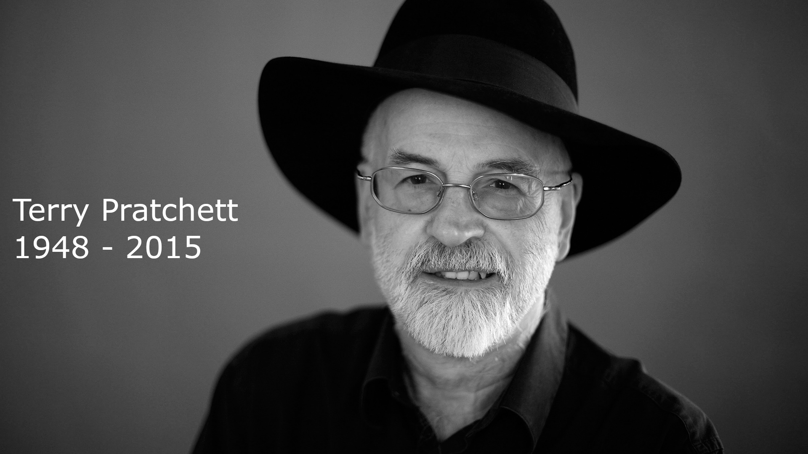

Sir Terry Pratchett
Imagination not intelligence made us Human

"AT LAST, SIR TERRY, WE MUST WALK TOGETHER. Terry took Death's arm and followed him through the doors and on to the black desert under the enldess night. The End."--Rhianna Pratchett March 12, 2015
A timeline of a great writer
- 1948 - Terry Pratchett was born in Beaconsfield, Buckinghamsire
- 1962 - At 13 years old, Terry Pratchett published his first story, Business Rivals in his school magazine The Technical Cygnet
- 1963 - The story Business Rivals was published commercially as The Hades Business, and then bought his first typewriter from the proceeds